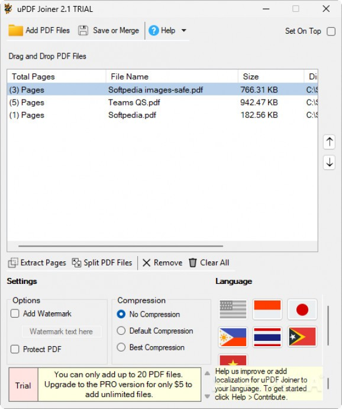

Split, merge, protect, and manage your PDF documents with ease and precision.
uPDF Joiner is a streamlined and versatile application designed to simplify your PDF workflow. Whether you're combining multiple documents into one, splitting pages into smaller parts, or securing files with watermarks and passwords, uPDF Joiner provides a straightforward solution with a user-friendly interface.
The application allows you to load your PDF files and decide exactly how you want to process them. You can extract individual pages, break up large documents, or merge several files together — all with just a few clicks. It is ideal for users who need fast, focused control over their PDF content.
Additionally, uPDF Joiner includes practical features such as password protection, watermarking, and compression to reduce file sizes. These tools ensure your PDFs are not only organized but also secure and optimized for sharing or archiving.
Whether you're handling simple edits or working with large batches of documents, uPDF Joiner is built to offer efficient performance and reliable output for personal and professional use.
Combine multiple PDF files or split large documents into smaller parts for easier handling.
Add text watermarks and password protection to keep your PDFs safe and branded.
Just drag your files into the application and start processing — no complex setup needed.
